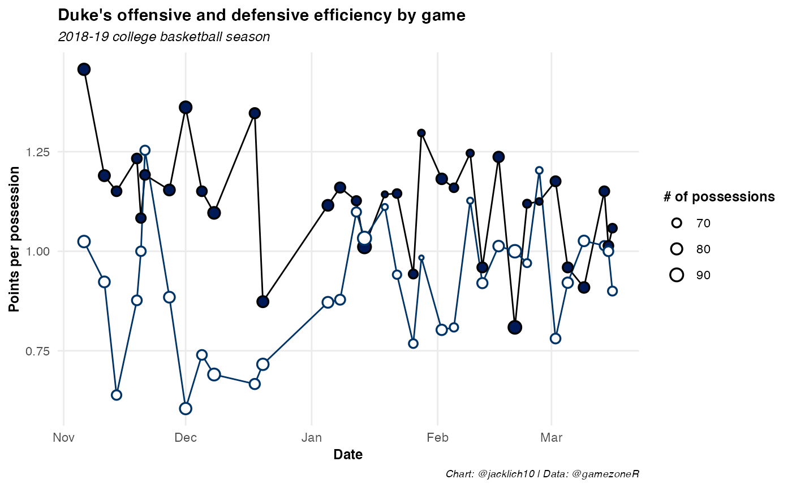

Intro to gamezoneR
Jack Lichtenstein
intro-to-gamezoneR.RmdWe will be acquiring data from gamezone.stats.com, using the gamezoneR package, created by Jack Lichtenstein.
R & RStudio
This tutorial will require the use of R and RStudio. You can follow the instructions at R Studio on how to get started.
Import libraries
library(dplyr)
library(ggplot2)
# set a ggplot2 theme
theme_set(
theme_bw() +
theme(plot.title = element_text(face = "bold", size = 32/.pt, hjust = 0),
plot.subtitle = element_text(face = "italic", size = 26/.pt),
plot.caption = element_text(face = "italic", size = 20/.pt),
strip.background = element_rect(color = "black", size = 3, linetype = "blank"),
strip.text = element_text(face = "bold", size = 24/.pt, hjust = 0),
panel.grid.minor = element_blank(),
panel.border = element_blank(),
axis.ticks = element_blank(),
axis.text = element_text(size = 24/.pt),
axis.title = element_text(face = "bold", size = 26/.pt),
legend.title = element_text(face = "bold", size = 26/.pt),
legend.text = element_text(size = 24/.pt)))Scraping schedules
There are two functions to scrape schedules:
The gamezoneR::gamezone_mbb_master_schedule() function has a parameter for ranked_games, which is a logical argument specifying whether or not to scrape only the games on that date where at least one team is ranked in the AP top 25 poll. Turning this off will scrape all games from the inputted date, regardless of whether a team is ranked or not.
Please note that specifying ranked_games = T increases the speed of the function because it utilizes the underlying API, while ranked_games = F does not.
# first, the ranked games for a given date
schedule <- gamezoneR::gamezone_mbb_master_schedule(date = "2021-03-10", ranked_games = T)## ℹ Scraping ranked games master schedule for: 2021-03-10
## ℹ There were 1 game(s) on 2021-03-10
head(schedule)## # A tibble: 1 × 21
## season start_time game_date game_id tv home away home_abbr home_id
## <chr> <chr> <date> <dbl> <chr> <chr> <chr> <chr> <int>
## 1 2020-21 9:30 PM ET 2021-03-10 2317212 ESPN Oklahoma Iowa S… Okla 1558
## # … with 12 more variables: home_is_winner <lgl>, home_logo_id <chr>,
## # home_name <chr>, home_total <dbl>, home_ap_ranking <int>,
## # home_record <chr>, away_abbr <chr>, away_id <int>, away_logo_id <chr>,
## # away_name <chr>, away_total <dbl>, away_record <chr>
# then, all the games for a given date
schedule <- gamezoneR::gamezone_mbb_master_schedule(date = "2021-03-10", ranked_games = F)## ℹ Scraping master GameZone schedule for: 2021-03-10
## ℹ There were 184 game(s) on 2021-03-10
head(schedule)## # A tibble: 6 × 9
## season game_date game_id home away home_total away_total home_ap_ranking
## <chr> <chr> <dbl> <chr> <chr> <dbl> <dbl> <dbl>
## 1 2020-21 2021-03-10 2385719 Manhat… Manh… 42 99 NA
## 2 2020-21 2021-03-10 2378060 Alcorn… Wash… 67 85 NA
## 3 2020-21 2021-03-10 2398899 MSM Vill… 51 91 NA
## 4 2020-21 2021-03-10 2387146 UC San… Cali… 80 67 NA
## 5 2020-21 2021-03-10 2395485 B-C Sout… 54 75 NA
## 6 2020-21 2021-03-10 2387519 BobJon Woff… 79 117 NA
## # … with 1 more variable: away_ap_ranking <dbl>We are able to scrape games by date, but also by team using the gamezoneR::get_team_schedule() function.
duke_schedule <- gamezoneR::gamezone_mbb_team_schedule(team = "Duke", season = "2018-19")## ℹ Scraping 2018-19 season schedule for: Duke
head(duke_schedule)## # A tibble: 6 × 23
## season start_time game_date game_id tv home away home_abbr
## <chr> <chr> <date> <dbl> <chr> <chr> <chr> <chr>
## 1 2018-19 9:49 PM ET 2018-11-06 2083190 ESPN Kentucky Duke Kty
## 2 2018-19 1:00 PM ET 2018-11-11 2087019 ESPN Duke Army We… Duke
## 3 2018-19 7:00 PM ET 2018-11-14 2087022 ACCN Duke Eastern… Duke
## 4 2018-19 6:09 PM ET 2018-11-19 2082919 ESP2 San Diego State Duke SDSU
## 5 2018-19 8:00 PM ET 2018-11-20 2082916 ESPN Duke Auburn Duke
## 6 2018-19 5:00 PM ET 2018-11-21 2082915 ESPN Gonzaga Duke Gonz
## # … with 15 more variables: home_ap_ranking <int>, home_id <int>,
## # home_logo_id <chr>, home_name <chr>, home_total <dbl>,
## # home_is_winner <lgl>, home_record <chr>, away_abbr <chr>,
## # away_ap_ranking <int>, away_id <int>, away_is_winner <lgl>,
## # away_logo_id <chr>, away_name <chr>, away_total <dbl>, away_record <chr>Scraping the play-by-play
Now that we have a schedule to work with, we can use the gamezoneR::gamezone_mbb_pbp() function to scrape play-by-play data for individual gameIds. The argument sub_parse is a logical parameter specifying whether or not to attempt to parse substitution and lineup data. If TRUE, the play-by-play will be appended to include columns home_1 through away_5, specifying the names of the 10 players on the floor.
Please note that GameZone does not track all substitutions. As a result, a new column, sub_error will reside in the appended play-by-play data. I have not come across many games with no such errors.
pbp <- gamezoneR::gamezone_mbb_pbp(duke_schedule$game_id[1],
sub_parse = T)## • Scraping Play-by-Play for GameID: 2083190
## • Attempting to parse lineup and substitution data...
## Note that GameZone does not track all substitutions
## ✔ Completed GameID: 2083190
## Duke @ Kentucky## # A tibble: 1 × 2
## sub_error n
## <chr> <int>
## 1 NA 377
head(pbp)## # A tibble: 6 × 45
## season date game_id play_id neutral half home away home_name
## <chr> <date> <dbl> <dbl> <dbl> <int> <chr> <chr> <chr>
## 1 2018-19 2018-11-06 2083190 1 0 1 Kentucky Duke Wildcats
## 2 2018-19 2018-11-06 2083190 1 0 1 Kentucky Duke Wildcats
## 3 2018-19 2018-11-06 2083190 1 0 1 Kentucky Duke Wildcats
## 4 2018-19 2018-11-06 2083190 1 0 1 Kentucky Duke Wildcats
## 5 2018-19 2018-11-06 2083190 1 0 1 Kentucky Duke Wildcats
## 6 2018-19 2018-11-06 2083190 1 0 1 Kentucky Duke Wildcats
## # … with 36 more variables: away_name <chr>, home_timeouts <dbl>,
## # away_timeouts <dbl>, home_score <dbl>, away_score <dbl>, score_diff <dbl>,
## # team_id <dbl>, event_team <chr>, game_secs_remaining <dbl>,
## # half_secs_remaining <dbl>, play_length <dbl>, desc <chr>,
## # shot_outcome <chr>, free_throw <lgl>, three_pt <lgl>, shot_desc <chr>,
## # loc_x <dbl>, loc_y <dbl>, shooter_id <int>, shooter <chr>, assist <chr>,
## # substitution <dbl>, poss_before <chr>, poss_after <chr>, …Now, let’s scrape all of Duke’s games from the Zion Williamson 2018-19 season using purrr::map_df().
duke_pbp <- purrr::map_df(duke_schedule$game_id,
gamezoneR::gamezone_mbb_pbp, sub_parse = F)Let’s plot some shot charts. We will use the built in gamezoneR::base_court ggplot court.
duke_shots <- duke_pbp %>%
dplyr::filter(!is.na(loc_x),
shooter == "Zion Williamson")
gamezoneR::base_court +
geom_point(data = duke_shots,
aes(loc_x, loc_y, color = shot_outcome),
alpha = 0.8) +
theme(axis.line = element_blank(),
axis.text= element_blank(),
axis.ticks = element_blank(),
axis.title = element_blank(),
panel.background = element_blank(),
panel.grid = element_blank(),
plot.title = element_text(face = "bold", hjust = 0.5, size = 30/.pt, margin = margin(0, 0, 5, 0)),
plot.subtitle = element_text(face = "italic", hjust = 0.5, size = 24/.pt),
plot.caption = element_text(face = "italic", hjust = 1, size = 20/.pt, margin = margin(0, 0, 0, 0)),
legend.spacing.x = grid::unit(0, 'cm'),
legend.title = element_text(size = 20/.pt, face = "bold"),
legend.text = element_text(size = 16/.pt),
legend.margin = margin(0, 0, 0, 0),
legend.position = 'bottom',
legend.box.margin = margin(-35, 0, 0, 0),
plot.margin = margin(5, 0, 5, 0)) +
labs(title = "All of Zion Williamson's shots at Duke",
subtitle = "2018-19 college basketball season",
color = "Outcome",
caption = "Chart: @jacklich10 | Data: @gamezoneR")
You might notice that Zion seems to have very few shots at the rim compared to what you might expect. This is true! STATS LLC’s API codes all layups and dunks at either (25, 5.25) or (26, 6.25), so many shots are plotted on top of one another. I have no idea why this is the case, but you might want to experiment with randomizing the locations of these shots when plotting shot charts.
Since gamezoneR version 0.1.1 now attempts to parse possession information from the play-by-play, we can also look at a team’s offensive and defensive efficiency (by points per possession). Below is Duke’s offensive and defensive efficiency by game from the 2018-19 college basketball season.
duke_pbp %>%
dplyr::filter(!is.na(poss_before)) %>%
dplyr::mutate(poss_number = as.numeric(poss_number),
shot_made_numeric = dplyr::case_when(
is.na(shot_outcome) ~ NA_real_,
shot_outcome == "made" ~ 1,
shot_outcome == "missed" ~ 0),
shot_value = dplyr::case_when(
is.na(shot_outcome) ~ NA_real_,
free_throw == 1 ~ 1,
three_pt == 1 ~ 3,
T ~ 2),
points = dplyr::case_when(
shot_made_numeric == 0 ~ 0,
shot_made_numeric == 1 & free_throw == 1 ~ 1,
shot_made_numeric == 1 & three_pt == 1 ~ 3,
shot_made_numeric == 1 & three_pt == 0 & free_throw == 0 ~ 2)) %>%
dplyr::group_by(date, game_id, poss_before, poss_number) %>%
dplyr::summarise(fgm = sum(shot_outcome == "made" & free_throw == F, na.rm = T),
fga = sum(!is.na(shot_outcome) & free_throw == F),
ftm = sum(shot_outcome == "made" & free_throw == T),
fta = sum(!is.na(shot_outcome) & free_throw == T),
points = sum(points, na.rm = T),
.groups = "drop") %>%
dplyr::group_by(date, game_id, poss_before) %>%
dplyr::summarise(poss = dplyr::n(),
across(fgm:points, sum),
.groups = "drop") %>%
dplyr::mutate(ppp = points/poss,
type = ifelse(poss_before == "Duke", "Offense", "Defense"),
color = ifelse(poss_before == "Duke", "black", "#003366"),
fill = ifelse(poss_before == "Duke", "#001A57", "white")) %>%
ggplot(aes(date, ppp, fill = fill, color = color)) +
geom_line() +
geom_point(aes(size = poss),
pch = 21, stroke = 0.9) +
scale_color_identity() +
scale_fill_identity() +
scale_size_continuous(range = c(0.8, 3.5)) +
labs(title = "Duke's offensive and defensive efficiency by game",
subtitle = "2018-19 college basketball season",
x = "Date",
y = "Points per possession",
size = "# of possessions",
caption = "Chart: @jacklich10 | Data: @gamezoneR")
Loading in all play-by-play data from the repository
Alternatively, you may want to load in all games at once from the remote repository. To do so, run the following lines of code:
future::plan("multisession")
progressr::with_progress({
pbp <- gamezoneR::load_gamezone_pbp(c("2016-17", "2017-18", "2018-19", "2019-20", "2020-21"))
})Below, we aggregate each team’s offensive and defensive efficiency’s (again by points per possession) by game.
pbp_summarized <- pbp %>%
dplyr::distinct() %>%
dplyr::filter(!is.na(poss_before)) %>%
dplyr::mutate(poss_number = as.numeric(poss_number),
shot_made_numeric = dplyr::case_when(
is.na(shot_outcome) ~ NA_real_,
shot_outcome == "made" ~ 1,
shot_outcome == "missed" ~ 0),
shot_value = dplyr::case_when(
is.na(shot_outcome) ~ NA_real_,
free_throw == 1 ~ 1,
three_pt == 1 ~ 3,
T ~ 2),
points = dplyr::case_when(
shot_made_numeric == 0 ~ 0,
shot_made_numeric == 1 & free_throw == 1 ~ 1,
shot_made_numeric == 1 & three_pt == 1 ~ 3,
shot_made_numeric == 1 & three_pt == 0 & free_throw == 0 ~ 2)) %>%
dplyr::group_by(season, date, game_id, poss_before, poss_number) %>%
dplyr::summarise(fgm = sum(shot_outcome == "made" & free_throw == F, na.rm = T),
fga = sum(!is.na(shot_outcome) & free_throw == F),
ftm = sum(shot_outcome == "made" & free_throw == T),
fta = sum(!is.na(shot_outcome) & free_throw == T),
points = sum(points, na.rm = T),
.groups = "drop") %>%
dplyr::group_by(season, date, game_id, poss_before) %>%
dplyr::summarise(poss = dplyr::n(),
across(fgm:points, sum),
.groups = "drop") %>%
dplyr::mutate(ppp = points/poss)Let’s take a look at the most proficient offenses in college basketball since 2016-17:
| Best team offensive efficiencies | ||||
|---|---|---|---|---|
| 2016-17 through 2020-21 college basketball seasons | ||||
| season | Team | Games | PPP | |
| 2017-18 |  |
Villanova | 40 | 1.22 |
| 2020-21 |  |
Gonzaga | 32 | 1.22 |
| 2018-19 | |
Gonzaga | 37 | 1.22 |
| 2016-17 |  |
Oklahoma State | 33 | 1.21 |
| 2016-17 |  |
UCLA | 36 | 1.21 |
| 2019-20 | |
Gonzaga | 33 | 1.20 |
| 2020-21 |  |
Baylor | 30 | 1.19 |
| 2017-18 |  |
TCU | 32 | 1.19 |
| 2016-17 | |
Villanova | 36 | 1.18 |
| 2017-18 |  |
Purdue | 37 | 1.17 |
| 2020-21 |  |
Iowa | 31 | 1.17 |
| 2017-18 |  |
Western Kentucky | 34 | 1.17 |
| 2017-18 |  |
Saint Mary's | 24 | 1.17 |
| 2017-18 | |
Gonzaga | 37 | 1.17 |
| 2016-17 |  |
Michigan | 38 | 1.17 |
| Table: @jacklich10 | Data: @gamezoneR | ||||